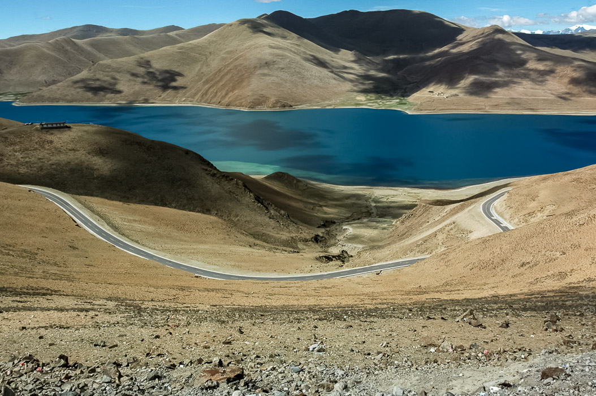
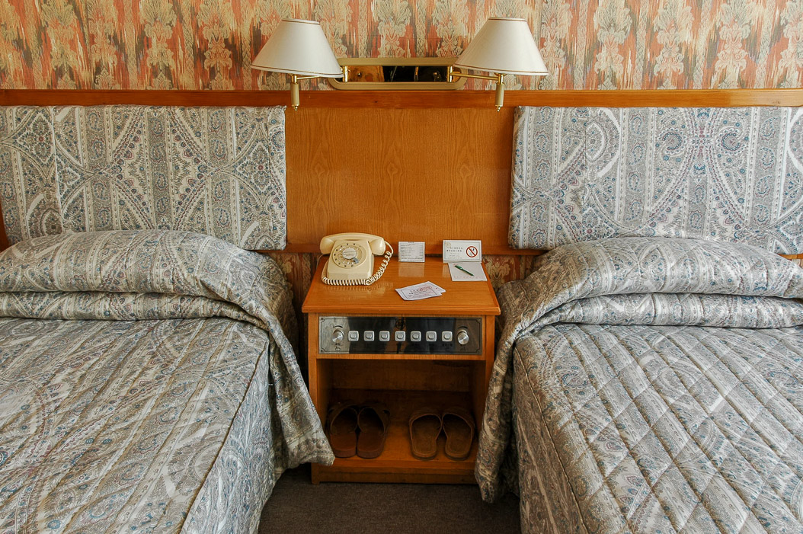
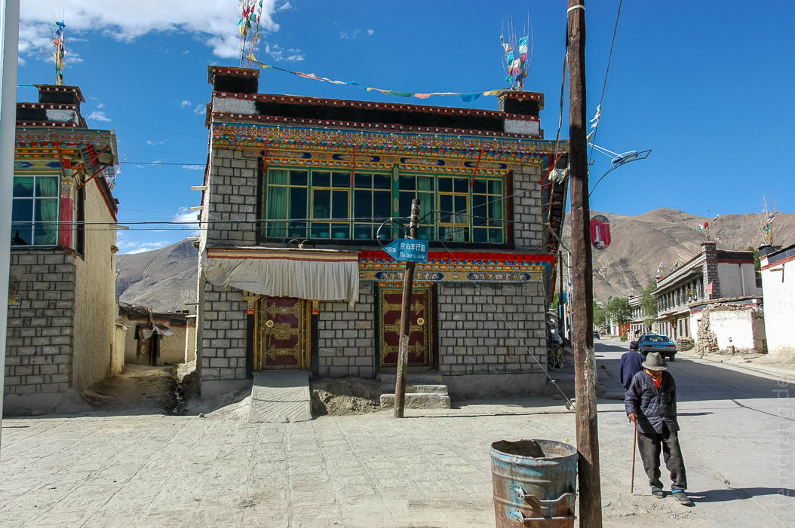
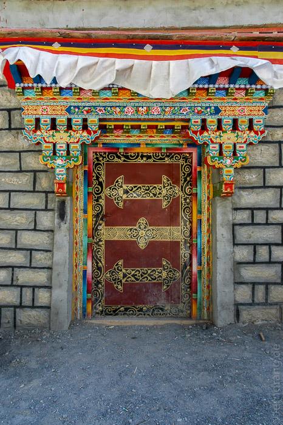

Heute stand ein kompletter Reisetag auf dem Programm. Auch wenn zu Hause sieben Stunden Autofahren als langweilig gelten - in Tibet das anders. Zuerst sind wir das Yarlung-Tal wieder zurück in Richtung Flughafen gefahren, sind dann aber noch weiter nach Westen gefahren. Ein mit dem Fahrer hart erkämpfter Abstecher zum 4700m hohen Kambha-La-Pass bot uns einen unglaublichen Blick auf den Yamdrok-See. Er gehört zu den heiligen Seen Tibets und wird seiner verzweigten Form wegen auch Skorpion-See genannt. Die Passstraße schlängelte sich in endlosen Kurven bis zur Kuppe, hinter der der See (hinter einem Duzend chinesischer Reisebusse) erhaben und türkis in der sandigen Ödnis schimmerte. Am Horizont konnten wir die ersten Siebentausender sehen, die ihre schneebedeckten Spitzen in Wolken versteckten.
Wegen (angeblicher) Straßenarbeiten konnten wir nicht hinunter zum See fahren, sondern mussten wieder umkehren. Weiter ging es den Tsangpo entlang, der sich hier durch steinigere Berge mehr wie ein Gebirgsfluss ausmachte. Im weiteren Verlauf öffnete sich das Tal zu einer breiten und fruchtbaren grünen Ebene. Der Fahrer wollte hier eine Abkuerzung nehmen, die uns ein Stündchen durch eine Wüstenlandschaft führte.
Dort konnten wir sehr urtümliche tibetische Doerfer sehen, bei denen wir das Gefühl hatten, die ersten Ausländer zu sein, die vor hundert Jahren die Gegend erkundeten. Alle Dorfbewohner von jung bis alt hielten inne bei was auch immer sie taten und winkten bis unser Wagen verschwand. Nachdem der Fahrer mehrfach am Steuer eingeschlafen war, hatten wir endlich Gyantse erreicht, das uns schon von weitem mit seinem Kloster und seiner Burg begrüßte, die auf hohen Felsen den Ort überragen.
Das Hotel (laut Schild 1986 errichtet) wirkte wie eine Kaserne mit 50er-Jahre-Inneneinrichtung. Wir hatten sogar ein Telefon mit Wählscheibe im Zimmer. Die Flure hatten so wellig aufgetragene Mustertapeten, das einem beim Treppensteigen schwindelig wurde.
Wir haben noch einen lohnenswerten Spaziergang durch die Altstadt gemacht, die ein gutes Bild davon gibt, wie es hier die letzten paar hundert Jahre vor den Chinesen aussah. Die Häuser werden von Mauern aus Jakmist umgeben und haben wunderschöne Verzierungen um Türen und Fenster.
 